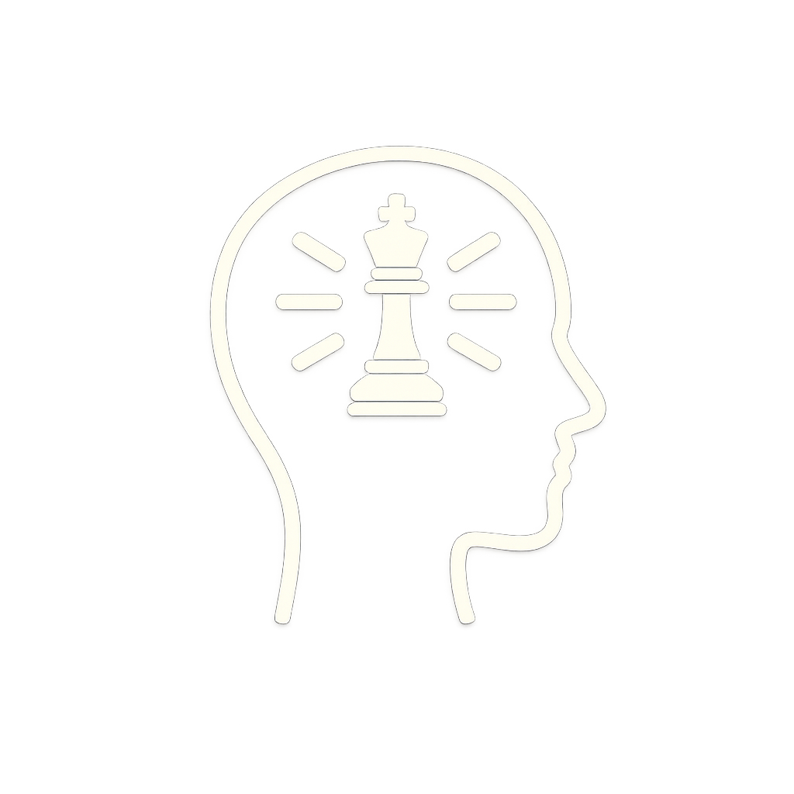
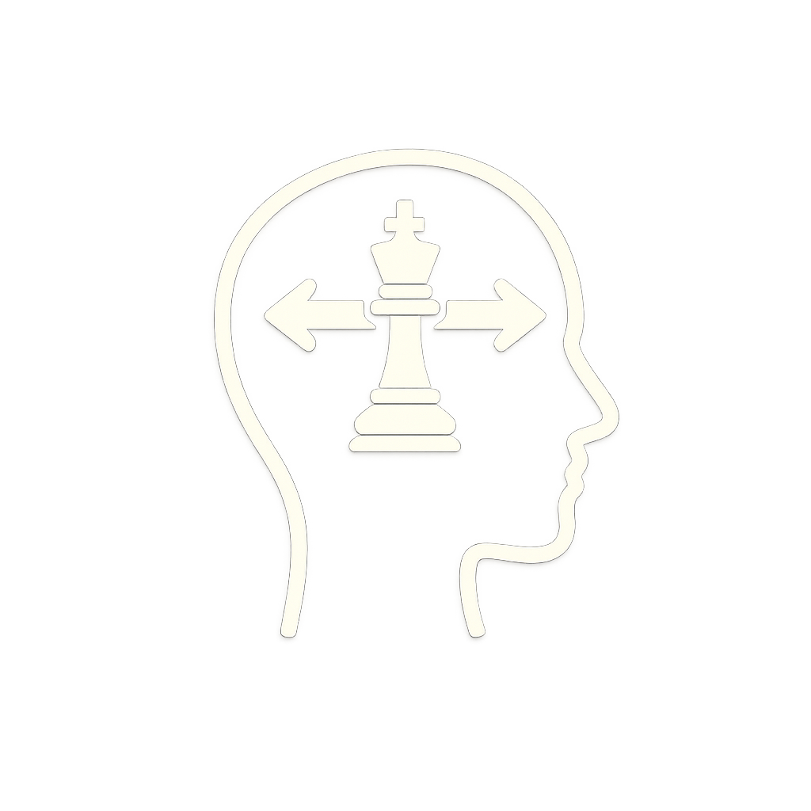
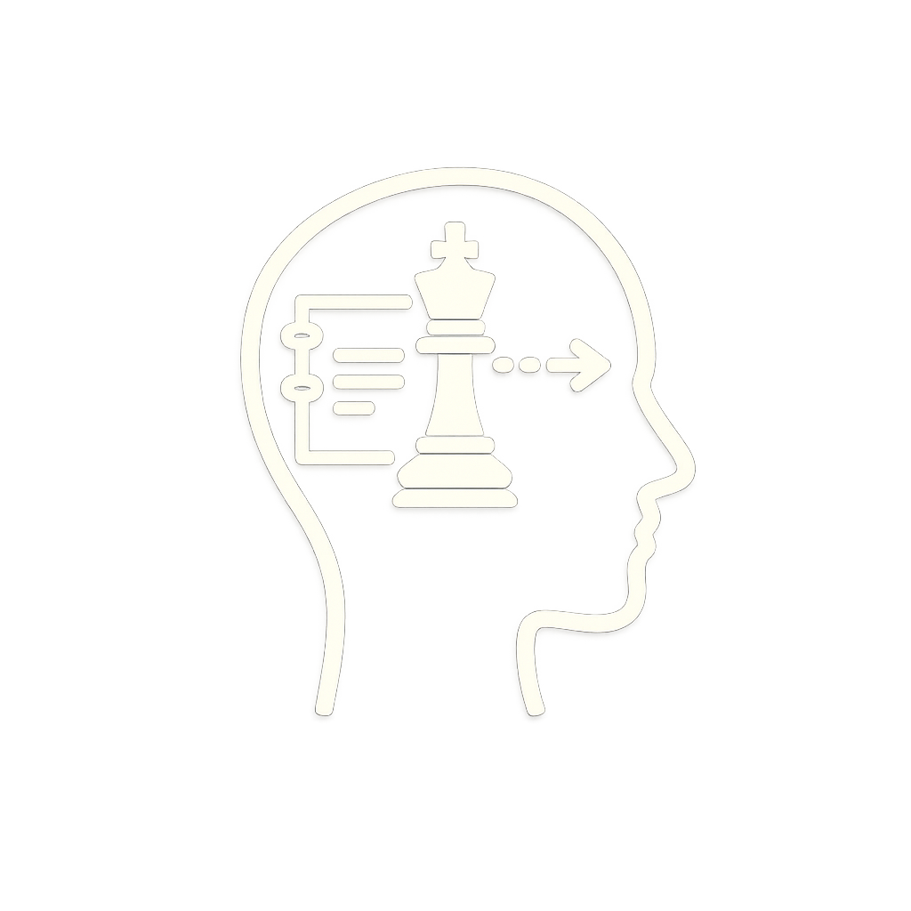
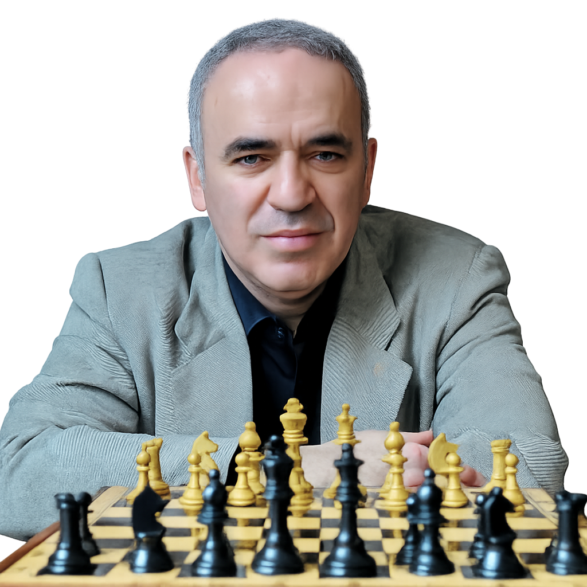

O jogo teve suas origens no jogo indiano “Chaturanga”, criado no século VI. À medida que se espalhou pelo Oriente Médio e Europa, ele foi evoluindo até se tornar o jogo que conhecemos hoje. Os árabes ajudaram a difundir o xadrez na Europa durante o período medieval, onde ganhou popularidade entre a nobreza e as elites.
No século XIX, o xadrez se tornou mais formalizado com a criação de competições internacionais e a padronização de suas regras. Em 1924, foi fundada a Fide (Federação Internacional de Xadrez), que regulamenta o jogo até os dias de hoje.
O xadrez não é apenas um jogo de tabuleiro, mas também uma forma de arte e exercício mental. Ele se baseia em princípios como estratégia, concentração, análise, reconhecimento de padrões e paciência. O jogador deve pensar várias jogadas à frente, prever as ações do oponente e adaptar suas táticas para alcançar a vitória. O objetivo é dar xeque-mate no rei adversário, o que requer um equilíbrio entre ataque e defesa.

Os jogadores precisam estar atentos a todos os detalhes e às possíveis estratégias do adversário, o que contribui para desenvolver o foco e a atenção em outras áreas da vida.

Cada jogada no xadrez exige que o jogador pense de maneira lógica e estratégica, fortalecendo o raciocínio lógico e a capacidade de tomar decisões rápidas e eficazes.

O xadrez estimula a memória e a aprendizagem ao exigir que o jogador reconheça padrões, lembre jogadas anteriores e desenvolva estratégias, aprimorando a capacidade de absorver e aplicar novos conhecimentos.
Com possibilidades de jogadas e combinações, os jogadores precisam ser criativos e encontrar soluções originais para situações complexas.

Ganhar não é um segredo que pertence a poucos. Ganhar é algo que podemos aprender estudando a nós mesmos, analisando o ambiente e nos preparando para qualquer desafio que apareça em nossa frente.
-Garry Kasparov